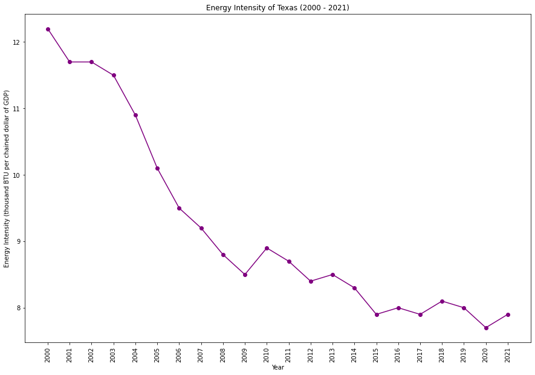

Texas, a significant contributor to national carbon emissions, has a diverse economic profile, with a major export being oil and gas. The state's economic reliance on the fossil fuel industry poses challenges for carbon reduction. The cultural landscape in Texas reflects a balancing act between economic interests in the energy sector and the growing emphasis on renewable energy adoption.
|
|
|  |